São Paulo
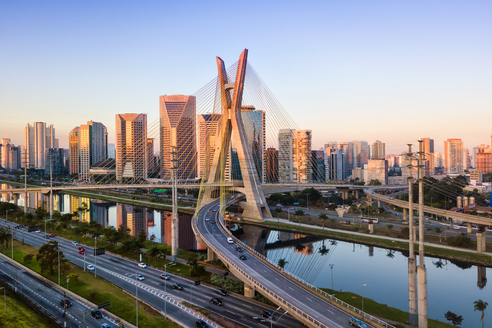São Paulo é a maior cidade do Brasil e um dos maiores centros urbanos do mundo, com grande relevância econômica, cultural e social. Sua importância turística reflete a diversidade, a modernidade e a rica herança cultural, o que a torna um destino único, não só para brasileiros, mas também para turistas internacionais. A cidade é um polo de negócios, arte, gastronomia, música e moda, oferecendo uma experiência cosmopolita de alta qualidade.
Além da sua famosa vida urbana, São Paulo tem diversas opções de lazer, como parques, museus, centros culturais e opções de turismo de compras. Sua gastronomia é uma das mais diversificadas do país, com uma grande mistura de influências culturais, desde pratos tradicionais brasileiros até a culinária de diversas partes do mundo. A cidade é um exemplo claro da mistura de culturas, sendo uma das mais dinâmicas e inovadoras do Brasil.
Principais pontos turísticos
- Avenida Paulista 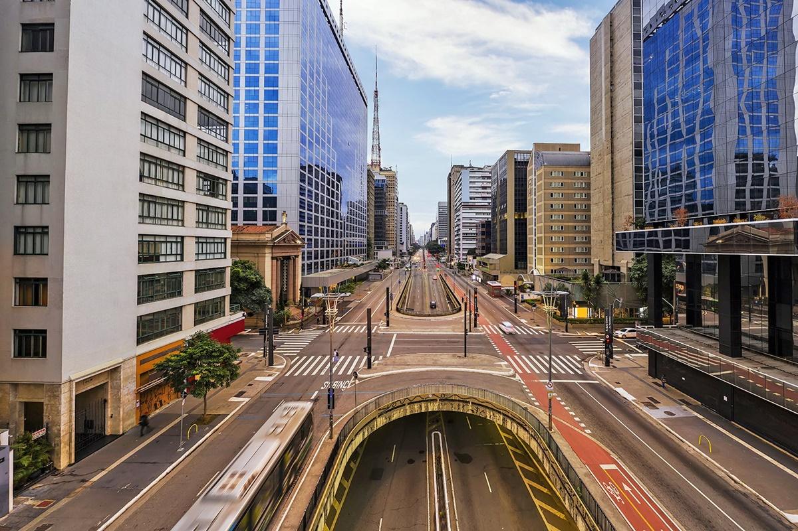
- Parque Ibirapuera
- Museu de Arte de São Paulo (MASP) 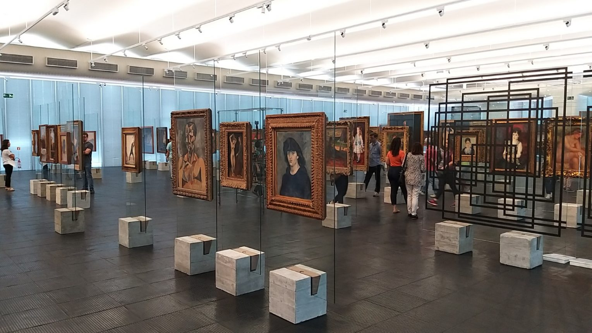
- Mercado Municipal de São Paulo (Mercadão) 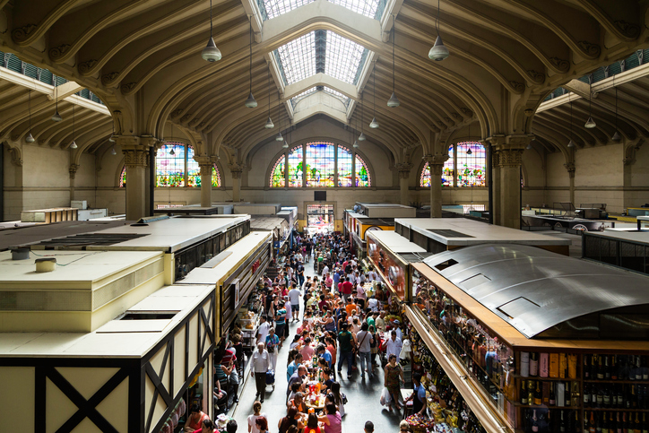
- Liberdade 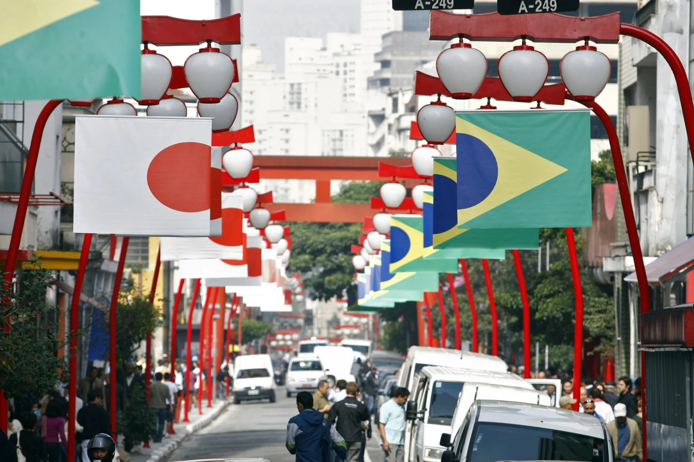
A Avenida Paulista é um dos maiores símbolos de São Paulo, representando o coração financeiro e cultural da cidade. A avenida abriga importantes centros culturais, como o Museu de Arte de São Paulo (MASP), além de lojas, restaurantes e grandes edifícios corporativos.
A Avenida Paulista é um ponto de convergência de turismo cultural e urbano. Com uma paisagem sempre em transformação, é um ótimo lugar para passeios a pé, com acesso a atrações culturais e vistas incríveis.

O Parque Ibirapuera é um dos maiores e mais visitados espaços públicos de São Paulo, com áreas para caminhadas, passeios de bicicleta, lagos e jardins, além de abrigar importantes museus e centros culturais, como o Museu de Arte Moderna (MAM) e o Auditório Ibirapuera.
Além de ser uma enorme área de lazer para os paulistanos, o parque também é um centro de cultura e arte, sendo um dos lugares mais icônicos da cidade para passeios ao ar livre e atividades culturais.
O MASP é um dos museus mais importantes do Brasil, com um vasto acervo de arte ocidental e brasileira, além de exposições temporárias de arte contemporânea e moderna. Sua arquitetura é um ícone, projetada por Lina Bo Bardi, com uma estrutura suspensa que se tornou símbolo de inovação.
O MASP é um marco cultural não apenas para São Paulo, mas para o Brasil. Ele oferece uma rica programação cultural e é um dos locais imperdíveis para quem deseja explorar a arte em suas diferentes manifestações.
O Mercado Municipal é famoso por sua arquitetura imponente e, principalmente, pela sua oferta gastronômica. É o lugar ideal para quem deseja experimentar o tradicional sanduíche de mortadela e o pastel de bacalhau, entre outras iguarias locais.
O Mercadão é um ponto turístico e gastronômico essencial em São Paulo, refletindo a diversidade da culinária paulistana e brasileira, sendo um local procurado por turistas e moradores para experimentar pratos típicos da cidade.
O bairro da Liberdade é o maior reduto da comunidade japonesa fora do Japão. Este bairro culturalmente rico é conhecido por sua gastronomia, lojas de produtos orientais, festivais e templos tradicionais japoneses. O local oferece uma imersão na cultura nipônica, com diversos restaurantes e mercados de comida japonesa.
A Liberdade é uma das áreas mais turísticas de São Paulo, sendo um local indispensável para quem deseja conhecer a cultura japonesa no Brasil, além de proporcionar uma experiência gastronômica única.
Principais pontos gastronômicos
- Figueira Rubaiyat 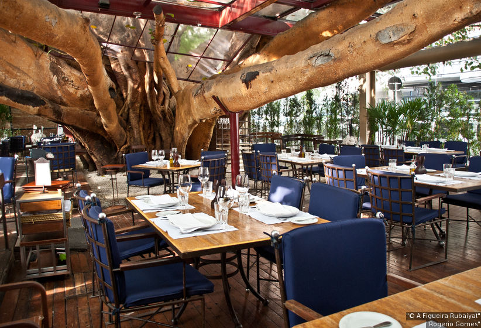
- Localização: Bairro Jardins.
- Ristorante Fasano 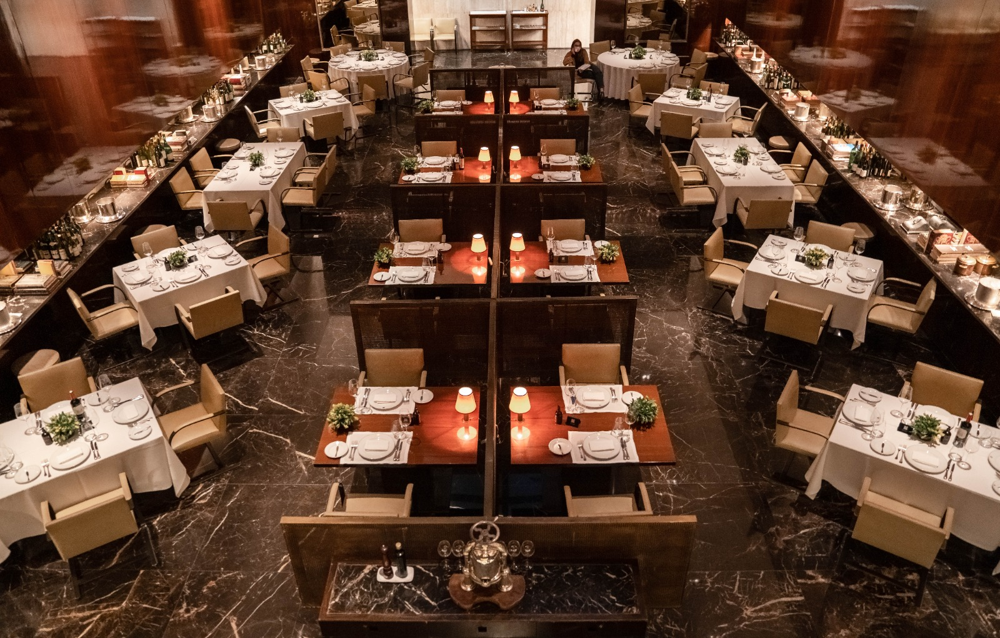
- Localização: Bairro Jardins.
- D.O.M. 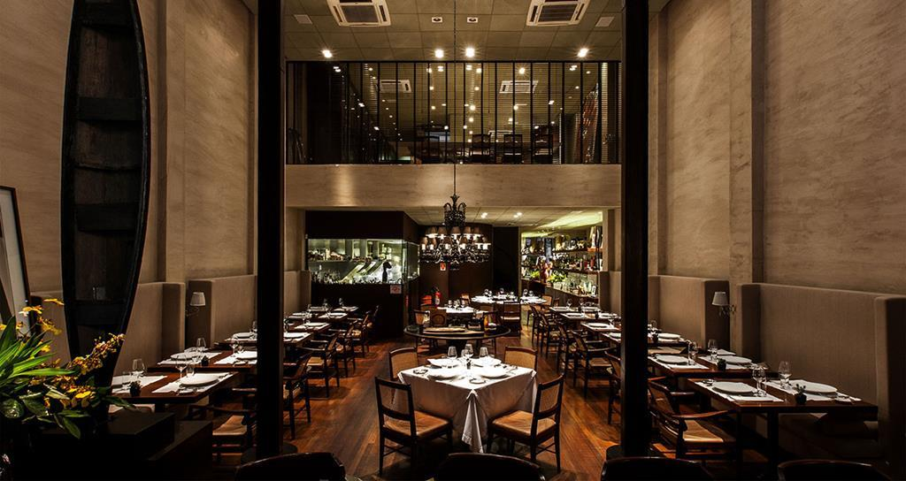
- Localização: Bairro Jardins.
O Figueira Rubaiyat é um restaurante de alto nível, famoso por sua culinária contemporânea e cortes de carnes nobres. A casa oferece uma experiência sofisticada, com pratos elaborados e uma imponente figueira no centro do restaurante.
É um dos restaurantes mais renomados de São Paulo, ideal para quem busca uma refeição de alto padrão e uma experiência gastronômica marcante.
O Ristorante Fasano é um dos melhores restaurantes italianos da cidade, com uma culinária de alta gastronomia que mistura tradição e inovação. É conhecido por seus pratos refinados e pela excelência no serviço.
Este restaurante é uma das maiores referências da gastronomia italiana em São Paulo, perfeito para quem aprecia pratos sofisticados e o atendimento de luxo.
O D.O.M. é o restaurante do renomado chef Alex Atala e oferece uma experiência gastronômica de alto nível, focada em ingredientes brasileiros. A casa é internacionalmente premiada e foca na valorização da culinária brasileira.
O D.O.M. é um dos restaurantes mais premiados de São Paulo e um excelente lugar para quem deseja conhecer a gastronomia de alta classe com foco na brasilidade.
Principais pontos culturais
- Teatro Municipal de São Paulo 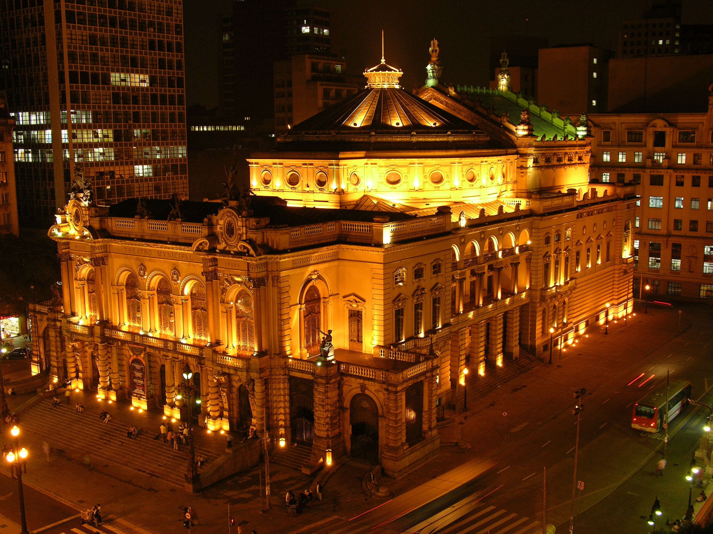
- Localização: Centro de São Paulo.
- Pinacoteca do Estado de São Paulo 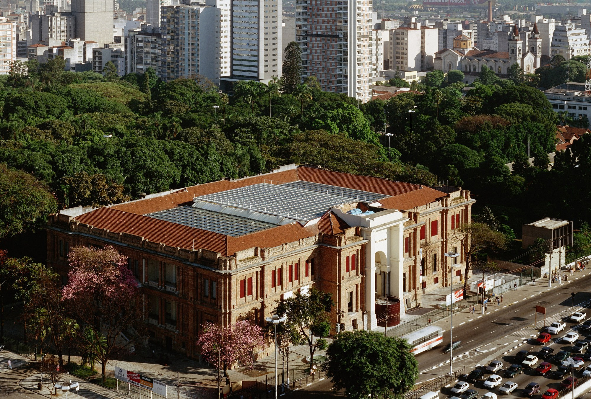
- Localização: Bairro Luz.
- Instituto Tomie Ohtake 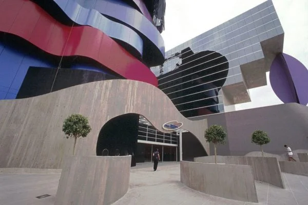
- Localização: Pinheiros.
- Museu da Imagem e do Som (MIS) 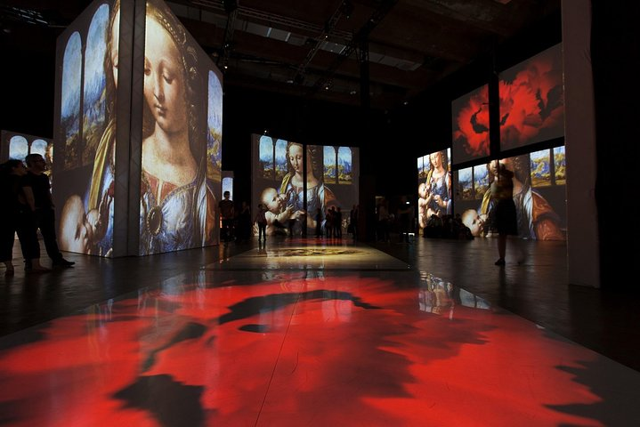
- Localização: Jardim Europa.
O Teatro Municipal de São Paulo é uma das construções mais emblemáticas da cidade, conhecido pela sua arquitetura clássica e pela programação cultural de alto nível. O teatro oferece uma vasta gama de apresentações, desde óperas até balés e concertos sinfônicos.
Este é um dos principais pontos culturais de São Paulo, fundamental para quem deseja vivenciar o melhor da arte clássica e das produções culturais de renome.
A Pinacoteca é um dos museus mais importantes de arte do Brasil, com um acervo extenso de obras de artistas brasileiros. O museu é um centro de arte moderna e contemporânea e recebe exposições temporárias de artistas renomados.
É um ponto de visitação obrigatório para quem se interessa pela arte brasileira, além de ser um excelente local para admirar uma arquitetura clássica e moderna ao mesmo tempo.
O Instituto Tomie Ohtake é dedicado à arte moderna e contemporânea, com exposições de grande porte de artistas nacionais e internacionais. O local também oferece atividades educacionais e culturais.
Um dos principais centros culturais da cidade, é um lugar importante para quem deseja acompanhar as últimas tendências da arte contemporânea e fazer imersão na produção cultural atual.
O MIS é dedicado à preservação e exibição de fotografias, filmes, vídeos e músicas, refletindo a produção artística e cultural da mídia e das artes visuais. O museu também realiza exposições interativas e eventos de entretenimento.
Este é um espaço essencial para quem deseja explorar a cultura digital, audiovisual e as produções inovadoras de arte contemporânea.